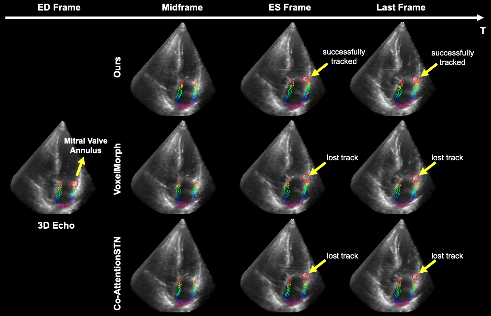

Results
Point tracking results


Myocardial motion tracking stands as an essential clinical tool in the prevention and detection of Cardiovascular Diseases (CVDs), the foremost cause of death globally. However, current techniques suffer incomplete and inaccurate motion estimation of the myocardium both in spatial and temporal dimensions, hindering the early identification of myocardial dysfunction. In addressing these challenges, this paper introduces the Neural Cardiac Motion Field (NeuralCMF). NeuralCMF leverages the implicit neural representation (INR) to model the 3D structure and the comprehensive 6D forward/backward motion of the heart. This method surpasses pixel-wise limitations by offering the capability to continuously query the precise shape and motion of the myocardium at any specific point throughout the cardiac cycle, enhancing the detailed analysis of cardiac dynamics beyond traditional speckle tracking. Notably, NeuralCMF operates without the need for paired datasets, and its optimization is self-supervised through the physics knowledge priors both in space and time dimensions, ensuring compatibility with both 2D and 3D echocardiogram video inputs. Experimental validations across three representative datasets support the robustness and innovative nature of the NeuralCMF, marking significant advantages over existing state-of-the-arts in cardiac imaging and motion tracking.
@article{shen2024continuous,
author = {Shen, Chengkang and Zhu, Hao and Zhou, You and Liu, Yu and Yi, Si and Dong, Lili and Zhao, Weipeng and Brady, David and Cao, Xun and Ma, Zhan and Lin, Yi},
title = {Continuous 3D Myocardial Motion Tracking via Echocardiography},
journal = {IEEE Transactions on Medical Imaging},
year = {2024},
publisher = {IEEE}
}